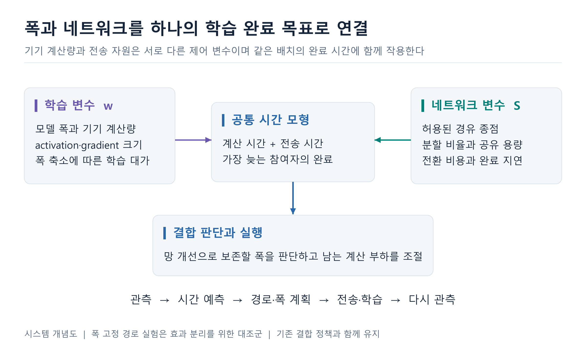
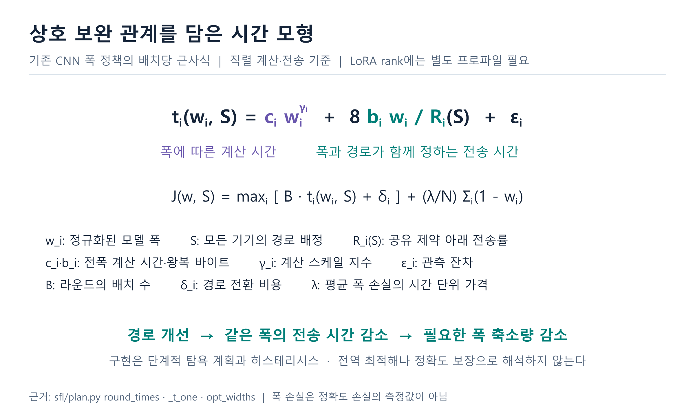
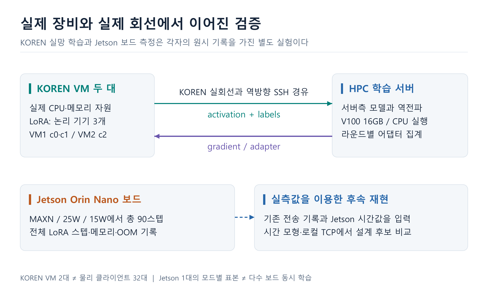
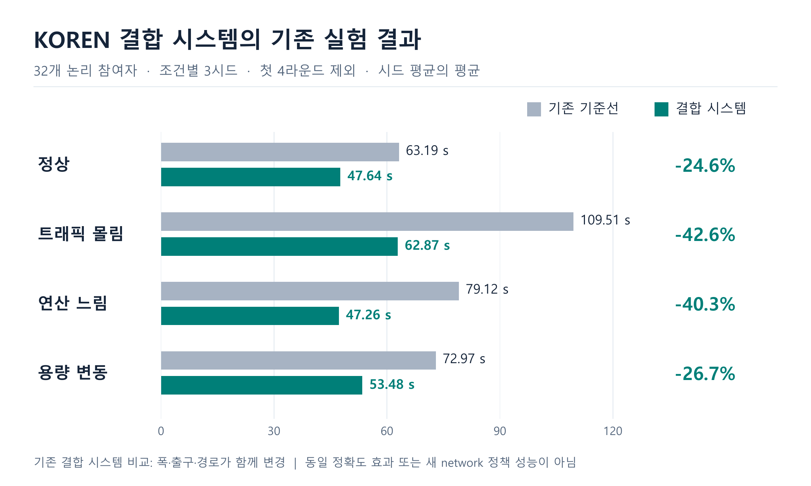
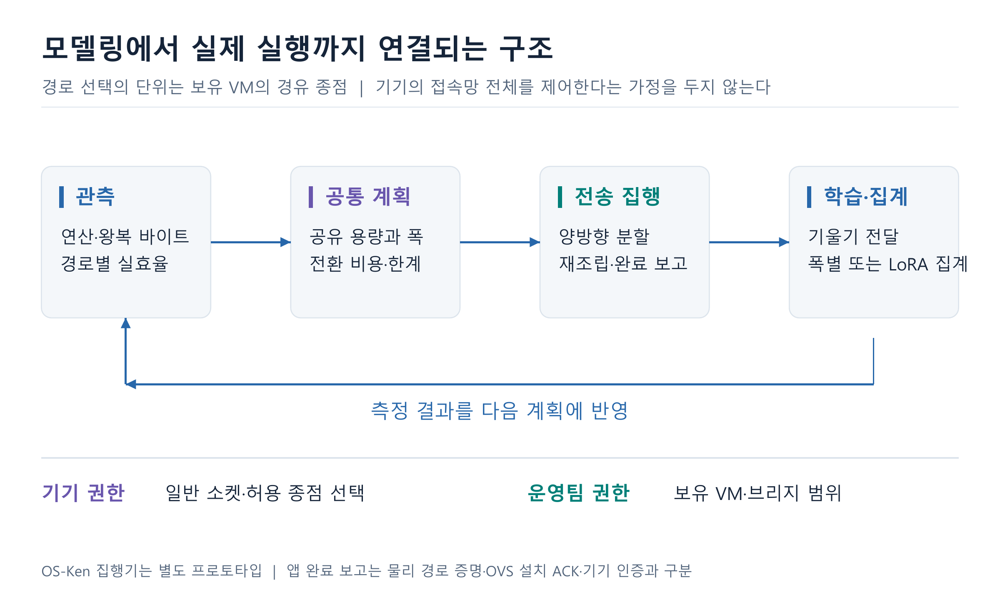
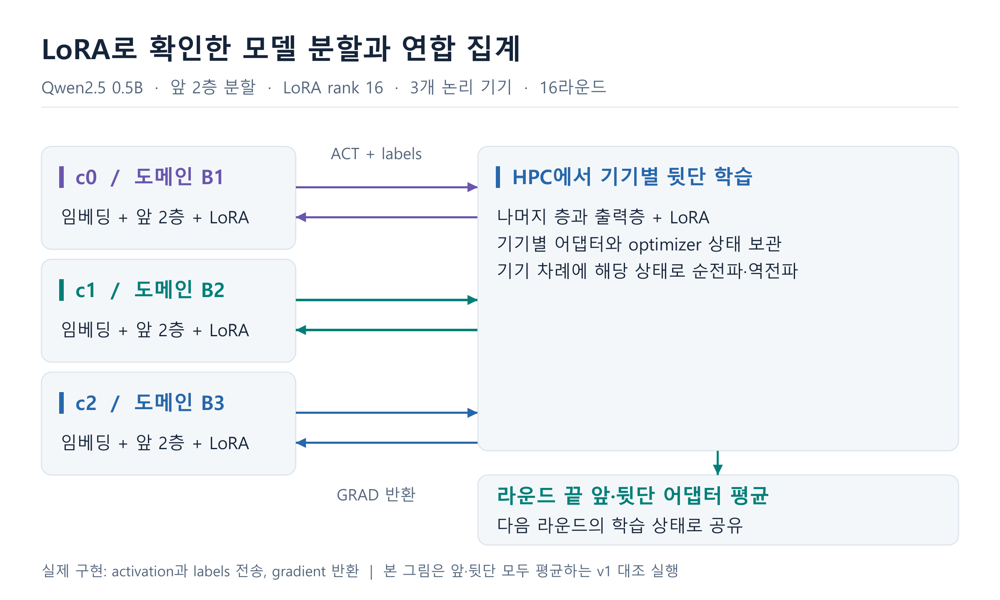
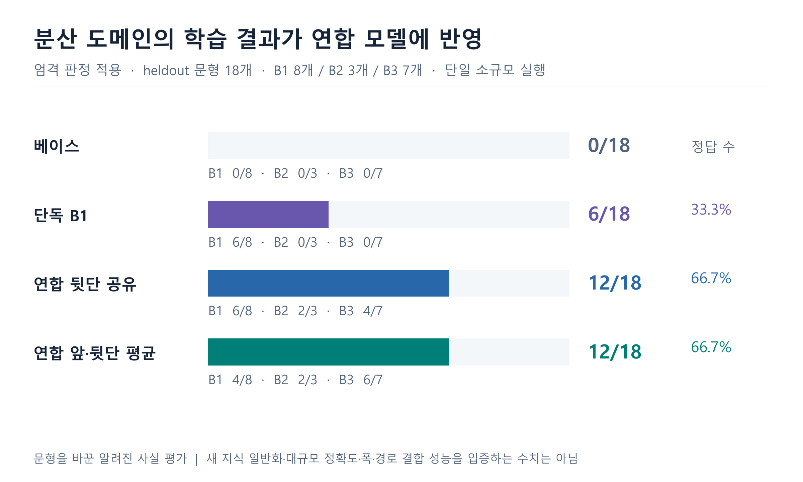
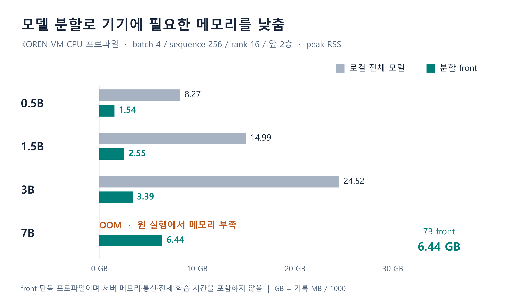
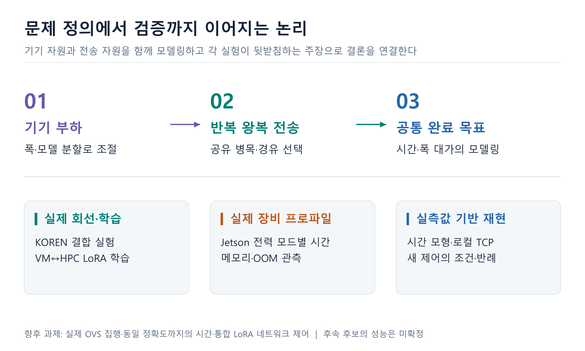

AWARENET / KOREN / 2026.09.26
폭과 네트워크를 연결한
분할 연합학습 시스템
두 제어 변수를 공통 시간 모형으로 연결하고, 실제 회선과 장비에서 구현을 검증했습니다. 모델링·시스템·KOREN 성과·LoRA 학습을 잇는 발표용 이미지 9종입니다.
01 폭과 네트워크를 하나의 학습 완료 목표로 연결
기기 계산량과 전송 자원은 서로 다른 제어 변수이며 같은 배치의 완료 시간에 함께 작용한다

시스템 개념도 | 폭 고정 경로 실험은 효과 분리를 위한 대조군 | 기존 결합 정책과 함께 유지
PNG 다운로드 / SVG 다운로드02 상호 보완 관계를 담은 시간 모형
기존 CNN 폭 정책의 배치당 근사식 | 직렬 계산·전송 기준 | LoRA rank에는 별도 프로파일 필요

근거: sfl/plan.py round_times · _t_one · opt_widths | 폭 손실은 정확도 손실의 측정값이 아님
PNG 다운로드 / SVG 다운로드03 실제 장비와 실제 회선에서 이어진 검증
KOREN 실망 학습과 Jetson 보드 측정은 각자의 원시 기록을 가진 별도 실험이다

KOREN VM 2대 ≠ 물리 클라이언트 32대 | Jetson 1대의 모드별 표본 ≠ 다수 보드 동시 학습
PNG 다운로드 / SVG 다운로드04 KOREN 결합 시스템의 기존 실험 결과
32개 논리 참여자 · 조건별 3시드 · 첫 4라운드 제외 · 시드 평균의 평균

기존 결합 시스템 비교: 폭·출구·경로가 함께 변경 | 동일 정확도 효과 또는 새 network 정책 성능이 아님
PNG 다운로드 / SVG 다운로드05 모델링에서 실제 실행까지 연결되는 구조
경로 선택의 단위는 보유 VM의 경유 종점 | 기기의 접속망 전체를 제어한다는 가정을 두지 않는다

OS-Ken 집행기는 별도 프로토타입 | 앱 완료 보고는 물리 경로 증명·OVS 설치 ACK·기기 인증과 구분
PNG 다운로드 / SVG 다운로드06 LoRA로 확인한 모델 분할과 연합 집계
Qwen2.5 0.5B · 앞 2층 분할 · LoRA rank 16 · 3개 논리 기기 · 16라운드

실제 구현: activation과 labels 전송, gradient 반환 | 본 그림은 앞·뒷단 모두 평균하는 v1 대조 실행
PNG 다운로드 / SVG 다운로드07 분산 도메인의 학습 결과가 연합 모델에 반영
엄격 판정 적용 · heldout 문형 18개 · B1 8개 / B2 3개 / B3 7개 · 단일 소규모 실행

문형을 바꾼 알려진 사실 평가 | 새 지식 일반화·대규모 정확도·폭·경로 결합 성능을 입증하는 수치는 아님
PNG 다운로드 / SVG 다운로드08 모델 분할로 기기에 필요한 메모리를 낮춤
KOREN VM CPU 프로파일 · batch 4 / sequence 256 / rank 16 / 앞 2층 · peak RSS

front 단독 프로파일이며 서버 메모리·통신·전체 학습 시간을 포함하지 않음 | GB = 기록 MB / 1000
PNG 다운로드 / SVG 다운로드09 문제 정의에서 검증까지 이어지는 논리
기기 자원과 전송 자원을 함께 모델링하고 각 실험이 뒷받침하는 주장으로 결론을 연결한다

향후 과제: 실제 OVS 집행·동일 정확도까지의 시간·통합 LoRA 네트워크 제어 | 후속 후보의 성능은 미확정
PNG 다운로드 / SVG 다운로드